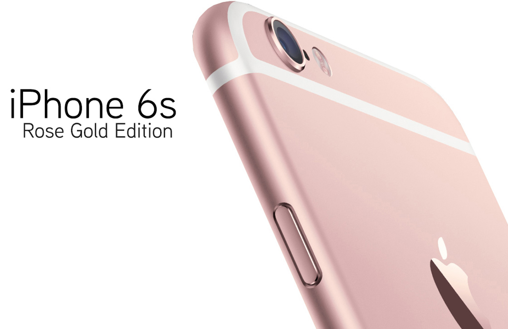

YES, THE IPHONE 6S COMES IN A ROSE GOLD COLOUR VARIANT
We have been speculating about this for a while, and now Apple has finally confirmed it – the new iPhones will be available in a rose gold variant with an aluminium finish. At the ongoing mega event held in San Francisco, Apple also unveiled an Apple Watch variant to match. iPhone 6s and 6s Plus will be available in a total of four shades – silver, gold, space grey, and breaking the monotony from iPhone 6 and 6 Plus, there will be one more addition, rose gold.

The new phones will also boast of a brand new glass structure, strongest in the industry. Along with the iPhone 6s, Apple also announced the new iPad Pro and Apple TV.